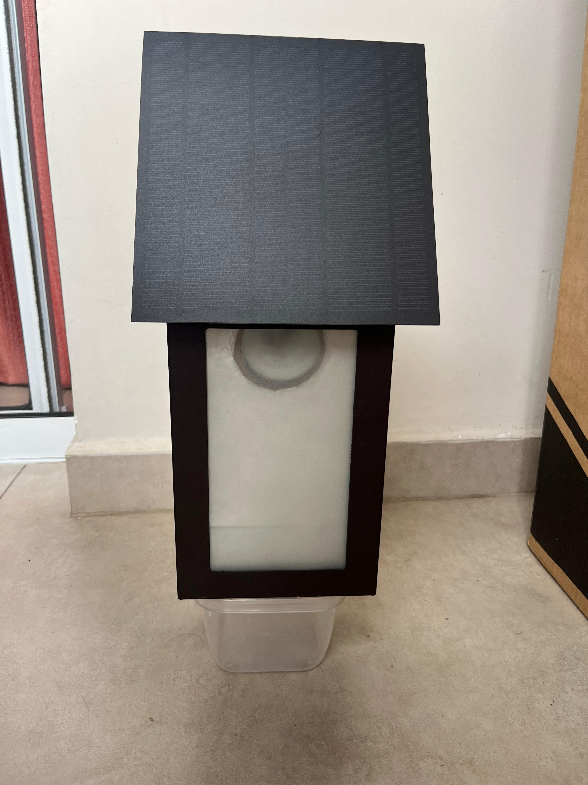
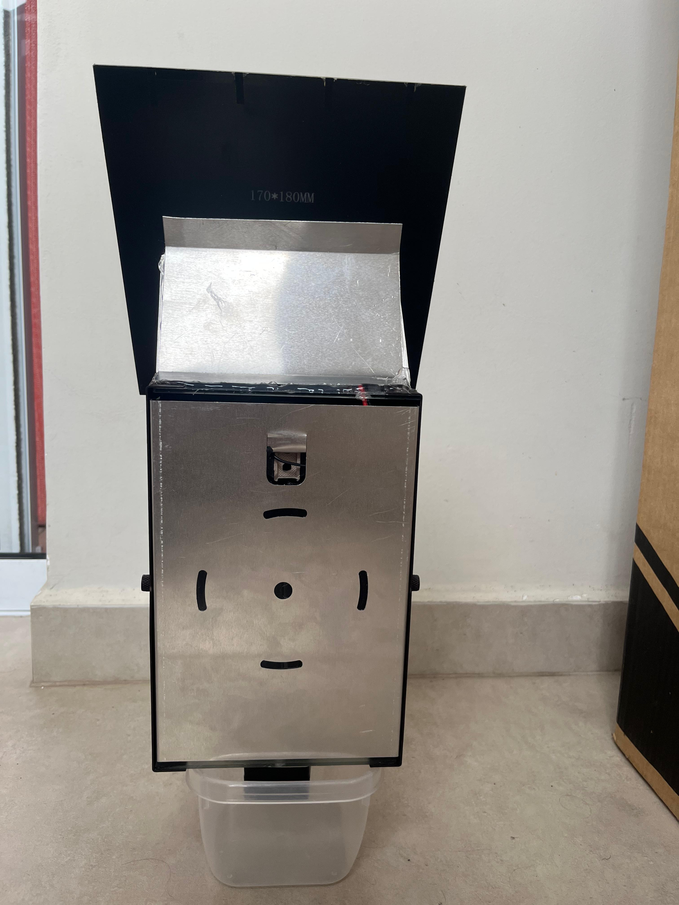
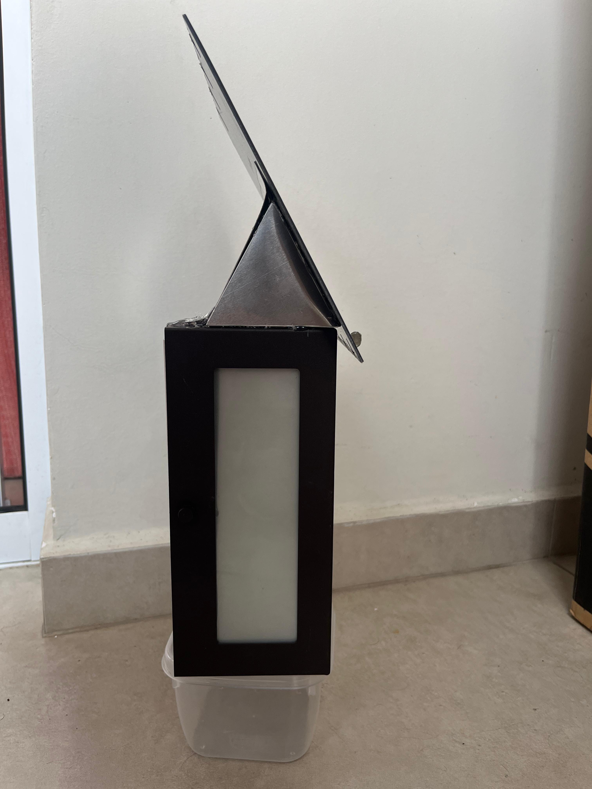

Iluminação externa usando energia solar, sensor PIR e LED 12V.
O painel fotovoltaico carrega a bateria durante o dia. À noite, o controlador libera energia e o sensor PIR aciona a lâmpada LED quando detecta movimento.
Ver Tutorial Completo
Bateria, painel e controlador.

Detecção de movimento.

Iluminação eficiente.